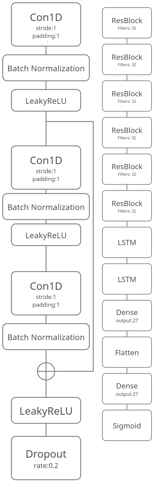

Cardiovascular Disease Classification
Purpose:
The project aims to read ECG data as input and classifies different cardiovascular disease using a deep neural network.
Machine learning helps doctors to classify different diseases automatically and robustness.
This reduces human errors and helps patients 24/7.
Machine learning helps doctors to classify different diseases automatically and robustness.
This reduces human errors and helps patients 24/7.
Pre-processing
I first truncated signals to 10s and filtered them with 3rd order Butterworth low pass filer of cutoff frequency at 10hz.
Model:

I tried different models.
I tried to extract HRV features and merged them into the neural network.
I also tried increasing ResBlocks, but it did not work well.
The final model is a deep residual neural network with LSTM attention mechanism. The input shape is 12x5000 for 12 leads ECG signals and 5000 data points for a 10s/500Hz signal data. This model is trained with Adam optimizer, binary cross-entropy as loss, and learning rate at 1e-4.
The final model is a deep residual neural network with LSTM attention mechanism. The input shape is 12x5000 for 12 leads ECG signals and 5000 data points for a 10s/500Hz signal data. This model is trained with Adam optimizer, binary cross-entropy as loss, and learning rate at 1e-4.
Result
This is the final result of my project.
It didn't work well.
The model can only identify sinus rhythm and others diseases.